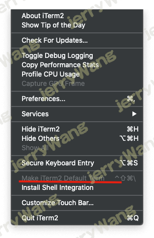
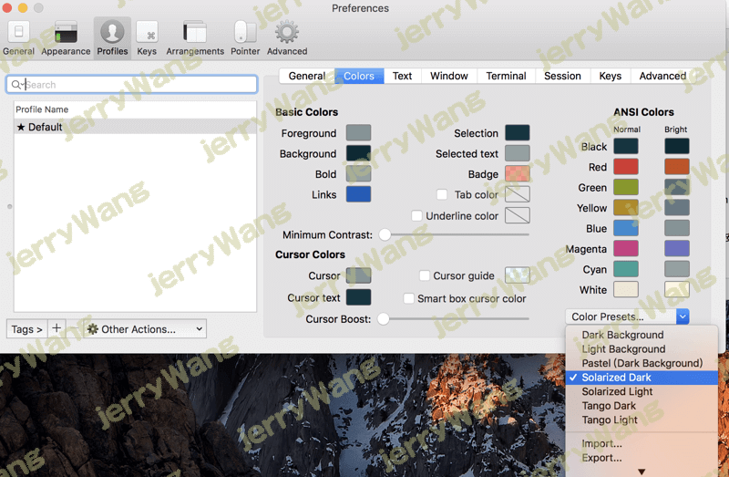
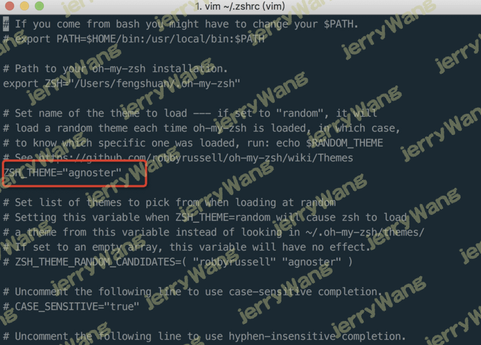
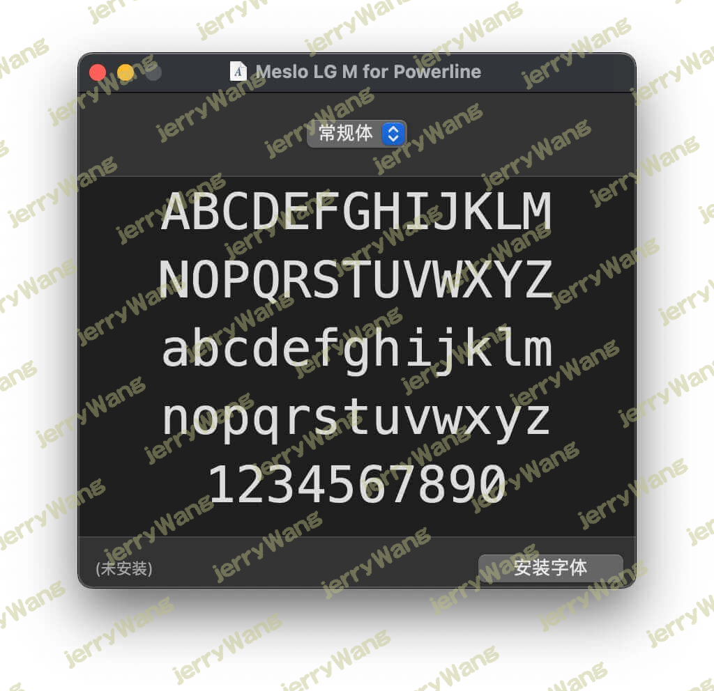
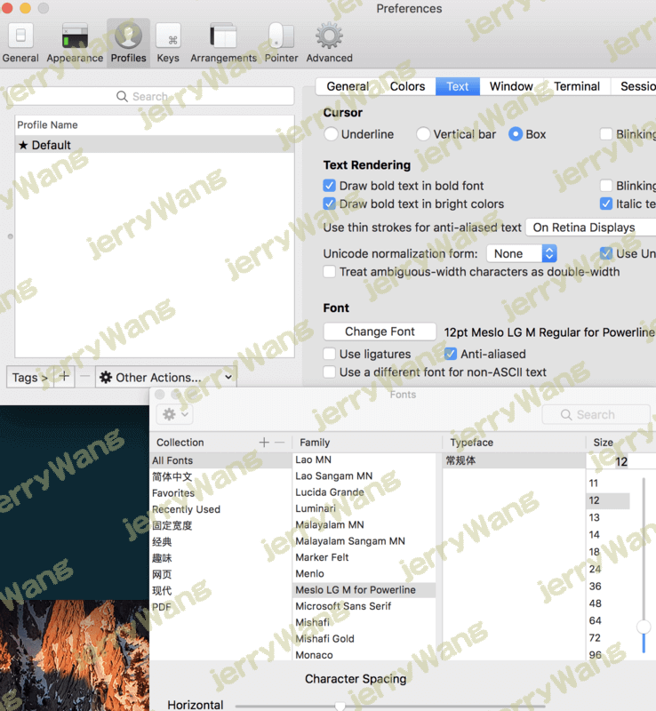
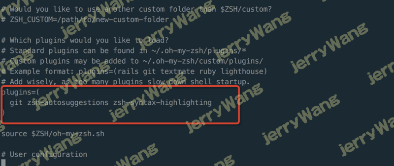
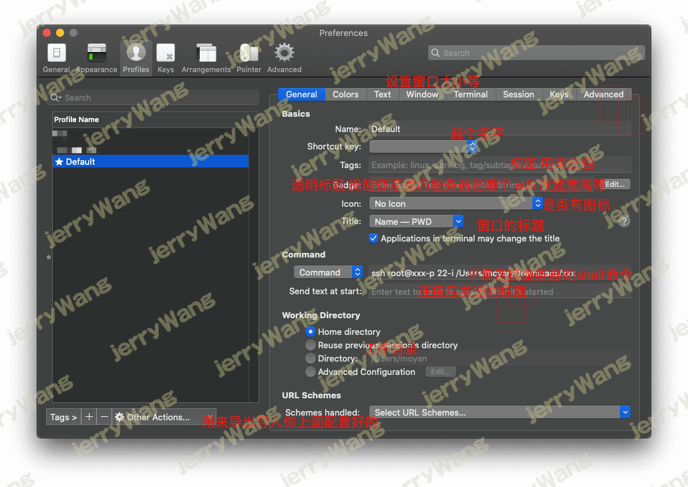
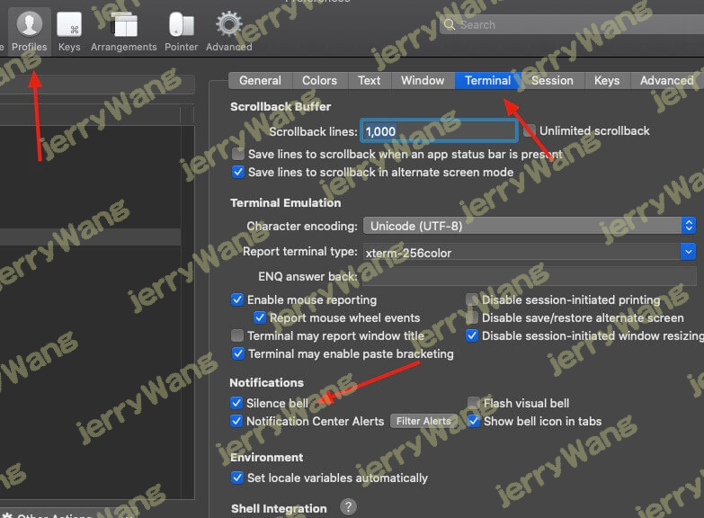

Mac Iterm2神器
mac 目前最好用的终端神器没有之一
安装iTerm2
下载地址：https://www.iterm2.com/downlo…
也可以通过Homebrew来安装
1 | $ brew cask install iterm2 |
配置
配置ITerm为默认终端

配置iTerm2主题
最新版的ITerm2 默认Solarized Dark 可以直接选择
iTerm2 最常用的主题是 Solarized Dark theme
下载地址：http://ethanschoonover.com/so…
下载的是压缩文件，解压后，打开iTerm2，按Command+,键，打开Preferences配置页面，然后Profiles -> Colors -> Color
Presets -> Import，选择刚解压的压缩文件solarized->iterm2-colors-solarized->Solarized Dark.itermcolors文件，导
入成功，最后选择Solarized Dark 主题，就可以了。

配置 Oh My Zsh
Oh My Zsh 是对主题的进一步扩展，地址：https://github.com/robbyrusse…
一键安装：
1 | sh -c "$(curl -fsSL https://raw.githubusercontent.com/ohmyzsh/ohmyzsh/master/tools/install.sh)" |
安装好之后，需要把 Zsh 设置为当前用户的默认 Shell（这样新建标签的时候才会使用 Zsh）：
1 | $ chsh -s /bin/zsh |
然后，我们编辑vim ~/.zshrc文件，将主题配置修改为ZSH_THEME="agnoster"
agnoster是比较常用的 zsh 主题之一，你可以挑选你喜欢的主题，zsh 主题列表：https://github.com/robbyrusse…
配置后，效果如下：
配置 Meslo 字体
使用上面的主题，需要 Meslo 字体支持，要不然会出现乱码的情况，字体下载地址：Meslo LG M Regular for Powerline.ttf
1 | wget https://raw.githubusercontent.com/powerline/fonts/master/Meslo%20Slashed/Meslo%20LG%20M%20Regular%20for%20Powerline.ttf |

下载好之后，直接在 Mac OS 中安装即可。
然后打开 iTerm2，按Command + ,键，打开 Preferences 配置界面，然后Profiles -> Text -> Font -> Chanage Font，选择
Meslo LG M Regular for Powerline 字体

自动提示填充
这个功能非常的实用，可以提高我们的开发效率
先克隆zsh-autosuggestions项目，到指定目录：
1 | $ git clone https://github.com/zsh-users/zsh-autosuggestions ~/.oh-my-zsh/custom/plugins/zsh-autosuggestions |
然后编辑vim ~/.zshrc文件，找到plugins配置，增加zsh-autosuggestions插件。

语法高亮
- 使用homebrew安装zsh-syntax-highlighting 插件。
git clone https://github.com/zsh-users/zsh-syntax-highlighting.git ${ZSH_CUSTOM:-~/.oh-my-zsh/custom}/plugins/zsh-syntax-highlighting
- vim ~/.zshrc配置文件，插入一行，保存退出。
plugins=( … zsh-syntax-highlighting)
- 输入命令。
source ~/.zshrc
PS：安装homebrew包管理工具：
/usr/bin/ruby -e “$(curl -fsSL https://raw.githubusercontent.com/Homebrew/install/master/install)”
给ITerm中Vim配色
Vim 的配色最好和终端的配色保持一致，不然在 Terminal/iTerm2 里使用命令行 Vim 会很别扭。
首先下载solarized（上述已经下载过了，进入下载解压后的目录），上文有下载方法和地址。执行以下命令
$ cd solarized
$ cd vim-colors-solarized/colors
$ mkdir -p ~/.vim/colors
$ cp solarized.vim ~/.vim/colors/
$ vi ~/.vimrc
加入下面三行设置即可
syntax enable
set background=dark
colorscheme solarized
给ITerm2中ls配色
1.下载安装 coreutils
brew install coreutils
2.创建颜色配置文件
gdircolors —print-database > ~/.dir_colors
3.启用颜色配置文件
sudo vim ~/.zshrc
添加如下即可——忽略以下
if brew list | grep coreutils > /dev/null ; then PATH=”$(brew —prefix coreutils)/libexec/gnubin:$PATH” alias ls=’ls -F —show-control-chars —color=auto’ eval
gdircolors -b $HOME/.dir_colorsfi
最后，希望本文对这方面需求的小伙伴，启到帮助的作用！
可用到的参考链接：
Mac下终端配置（item2 + oh-my-zsh + solarized配色方案）
mac 终端 使用 gnu coreutils 工具 ls 颜色显示
iTerm2 快捷命令
| 命令 | 说明 |
|---|---|
| command + t | 新建标签 |
| command + w | 关闭标签 |
| command + 数字 command + 左右方向键 | 切换标签 |
| command + enter | 切换全屏 |
| command + f | 查找 |
| command + d | 垂直分屏 |
| command + shift + d | 水平分屏 |
| command + option + 方向键 command + [ 或 command + ] | 切换屏幕 |
| command + ; | 查看历史命令 |
| command + shift + h | 查看剪贴板历史 |
| ctrl + u | 清除当前行 |
| ctrl + l | 清屏 |
| ctrl + a | 到行首 |
| ctrl + e | 到行尾 |
| ctrl + f/b | 前进后退 |
| ctrl + p | 上一条命令 |
| ctrl + r | 搜索命令历史 |
快捷登陆服务器

点击这个或者配置快捷键快速连接

最后不想一点击Iterm2就登陆到服务器上,之前默认的不要动还继续默认就行了
带星星的Profile Name就是默认的,修改回最初的配置.
Iterm2关闭警告声音
选中Preferences -> Profiles -> Terminal -> silence bell

[oh-my-zsh]异常提示
1 | [oh-my-zsh] Insecure completion-dependent directories detected: |
解决方法
1 | vi .zshrc |
公平地讲，zsh-user
对于每个插件都有正确的安装说明，具体取决于操作系统…
- https://github.com/zsh-users/zsh-syntax-highlighting - install.md
- https://github.com/zsh-users/zsh-completions - readme.md
- https://github.com/zsh-users/zsh-autosuggestions - install.md
- https://github.com/zsh-users/zsh-history-substring-search - readme.md
# Alfred Snippets文字扩展
 微信
微信 支付宝
支付宝